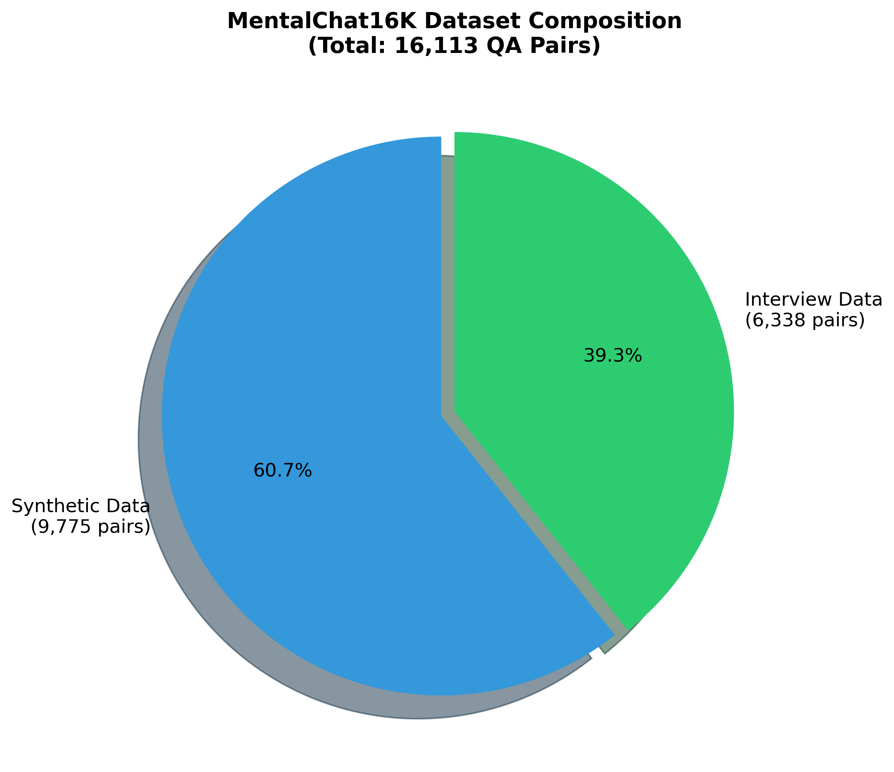
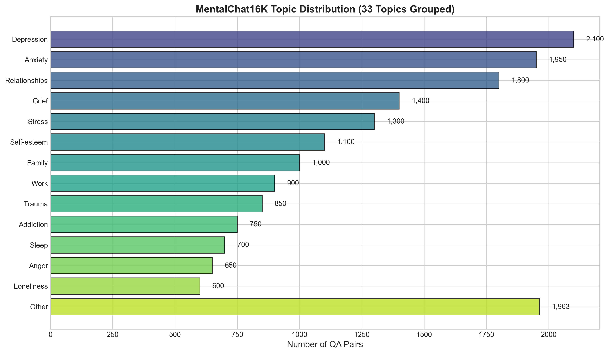
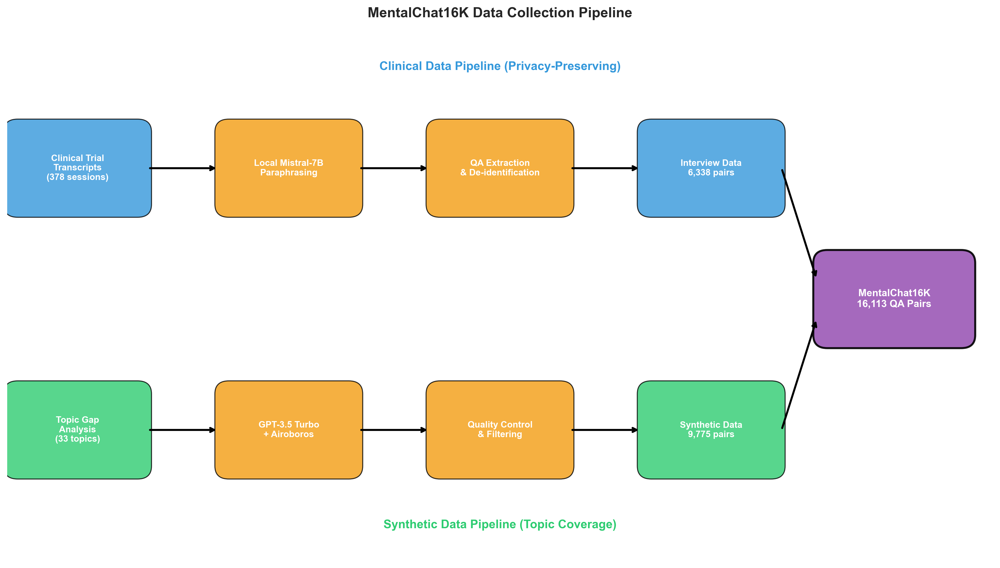
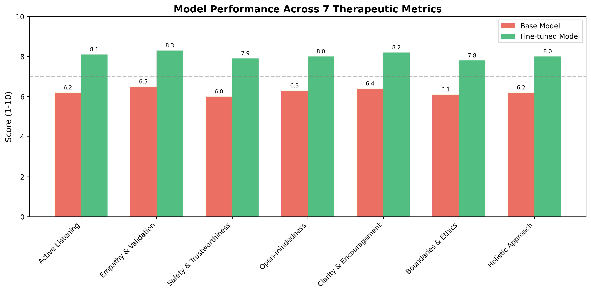
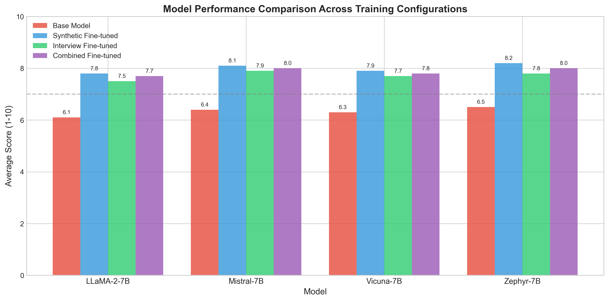

Building Empathetic AI: How MentalChat16K Is Shaping the Future of Mental Health Conversations
Tags: MachineLearning, MentalHealth, DataScience, NLP, AI
Hook: Why We Need Better Conversations About Mental Health
Every week I hear the same refrain from friends and colleagues: it is painfully hard to find timely, affordable mental health care. Waitlists stretch for months, insurance coverage is patchy, and stigma still pushes too many people to suffer in silence. AI chatbots promise 24/7 support, yet most feel like stilted FAQ engines rather than empathetic listeners. I think the gap between technical capability and human need is stark. MentalChat16K—introduced by Xu, Wei, Hou, and colleagues in their academic paper (arXiv: 2503.13509)—caught my attention because it tries to close that gap with data designed for empathy, safety, and clinical realism. This piece is my walk-through of their dataset, the clever pipeline behind it, and what I believe it signals for the next generation of mental health AI.
The Problem: Access, Quality, and Trust
- Shortage of professionals: Many regions have fewer than 10 mental health providers per 100,000 people. Even where therapists are available, cost and scheduling friction keep care out of reach.
- Barriers beyond supply: Stigma, cultural mismatch, and the logistics of weekly sessions make sustained support difficult. In my experience, people often need a low-friction way to test the waters before committing to therapy.
- Existing AI falls short: Most chatbots are trained on generic conversation data. They tend to miss context, give shallow encouragement, or—worse—respond unsafely to disclosures of self-harm. Safety filters alone cannot fix a dataset that lacks therapeutic nuance.
- Need for empathetic, ethical AI: Any assistant in this space must balance warmth with boundaries, prioritize user safety, and know when to encourage professional help. That requires training data that captures real therapeutic moves, not just polite chit-chat.
What Is MentalChat16K?
MentalChat16K is a dataset of 16,113 high-quality question-answer pairs purpose-built for mental health dialogue modeling. It blends two sources:
- Interview-derived pairs (39.3%, 6,338): Anonymized and paraphrased from real clinical transcripts, then turned into QA pairs that capture authentic therapeutic exchanges.
- Synthetic pairs (60.7%, 9,775): Generated to fill topic gaps and diversify scenarios without exposing private data.
The scope is broad, spanning 33 topics including anxiety, depression, grief, trauma, addiction, and relationship stress. Compared to earlier sets like Psych8K, MentalChat16K nearly doubles the size while pushing for richer coverage and safety-aware phrasing.


Pull quote: “60.7% synthetic + 39.3% clinical paraphrases = breadth without breaking privacy.”
The Clever Data Pipeline
I was most impressed by how the authors balanced privacy with realism. The pipeline runs locally to avoid leaking sensitive data:
- Clinical transcripts → Local paraphrasing: Raw transcripts are passed through a locally hosted Mistral-7B to paraphrase and strip identifiers. Keeping this step local is key: no external API sees the original conversations.
- QA extraction: The paraphrased dialogs are distilled into QA pairs that retain the therapist’s intent (validation, boundary setting, safety checks).
- Topic distribution analysis: The team maps which themes are underrepresented (e.g., postpartum anxiety, caregiver burnout).
- Synthetic generation with Airoboros: They prompt a controlled generation framework to create new QA pairs for the sparse topics, ensuring stylistic consistency and safety cues.
- Quality control: Human review plus automated de-identification scan for leaks, unsafe advice, and hallucinated medical claims.

Evaluation: Beyond Standard Metrics
Traditional NLP scores like BLEU or ROUGE say little about whether a response feels supportive or safe. The team instead grades models on seven therapeutic dimensions:
- Empathy – Does the response acknowledge feelings?
- Sensitivity – Does it avoid harm and respect boundaries?
- Helpfulness – Is the guidance actionable?
- Safety – Does it handle crisis language responsibly?
- Clarity – Is the message easy to follow?
- Depth – Does it move beyond surface-level platitudes?
- Respect – Does it treat the user with dignity?
Three evaluators—GPT-4, Gemini, and human raters—score the outputs. In my opinion, this multi-evaluator setup is important because models and humans notice different flaws. GPT-4 is strong at spotting logical gaps, Gemini flags tone issues more often, and humans are best at judging warmth and cultural fit.

Key Results and Insights
- Fine-tuning works: Models fine-tuned on MentalChat16K beat their base counterparts across all seven metrics. The biggest gains show up in empathy and safety, which is encouraging.
- Synthetic vs. real data trade-offs: Synthetic data boosts coverage for niche topics, but clinical-derived pairs still anchor tone and authenticity. In blended training, synthetic examples help with diversity while the paraphrased clinical examples prevent the model from sounding canned.
- Evaluator disagreements: GPT-4 often scores higher on clarity, while humans are stricter on warmth. Gemini sometimes over-penalizes assertive boundary-setting that therapists consider appropriate. This variance matters: benchmarking only with one evaluator can give a false sense of readiness.
- Future implications: I think the dataset sets a precedent for privacy-preserving pipelines. Expect to see more local paraphrasing + synthetic fill-ins for other sensitive domains (legal, HR, education).


Limitations and Ethical Considerations
- Synthetic authenticity: Even good synthetic data can miss subtle phrasing that signals genuine empathy. Models trained on it might sound supportive but hollow.
- English-only: The dataset is monolingual; cultural and linguistic nuances are absent.
- Demographic coverage: Anonymization hides demographics, which limits fairness analysis.
- AI is not therapy: No model here should replace clinicians. In crisis, escalation to human help is non-negotiable.
In my view, the most responsible path is to treat MentalChat16K as a tool for augmenting human-led care—think intake triage, psychoeducation, and gentle check-ins—rather than a stand-alone solution.
My Take: Why This Matters
I see three standout strengths:
- Privacy-first pipeline: Running paraphrasing locally with Mistral-7B is a smart way to respect patient confidentiality while still learning from clinical nuance.
- Therapeutic metrics: Evaluating on empathy, safety, and respect aligns the model with the real goals of care, not just lexical overlap.
- Balanced data mix: Pairing clinical paraphrases with targeted synthetic scenarios gives both authenticity and breadth.
What could be improved? I would love to see multilingual extensions, explicit cultural calibration, and open-sourced safety prompts to help others audit or adapt the approach. There is also room for richer longitudinal dialogs (not just QA) to capture therapeutic pacing over time.
Potential applications I find exciting:
- Warm-up conversations before a first therapy session, helping users articulate goals.
- Gentle check-ins between appointments to track mood shifts.
- Psychoeducational companions that explain coping strategies without pretending to diagnose.
If you are a researcher, I think the next step is to test how these models behave with real users, under supervision, and to publish failure cases openly. Transparency will build trust faster than glossy demos.
Conclusion: The Path Forward
MentalChat16K is not a silver bullet, but it is a meaningful step toward AI that listens better. By combining privacy-preserving data curation, therapeutic evaluation, and a pragmatic mix of clinical and synthetic examples, the dataset shows a direction I feel optimistic about. The big question now is whether we will invest as much effort in deployment safeguards and cultural inclusivity as we have in model scores. My hope is that this work nudges the field toward AI that acts less like a search engine and more like a considerate companion—and that it always knows when to hand the mic back to a human.
This piece is part of an academic assignment and is based on the MentalChat16K study by Xu, Wei, Hou, and colleagues (arXiv: 2503.13509).
Resources
- MentalChat16K repository and docs:
README.md in this project
- Slides overview:
slides folder
- Demo link: see
VIDEO_LINK.md
- Paper: Xu, J., Wei, T., Hou, B., et al. (2025). MentalChat16K: A Benchmark Dataset for Conversational Mental Health Assistance (arXiv: 2503.13509)
- Further reading: Prior dataset Psych8K for comparison